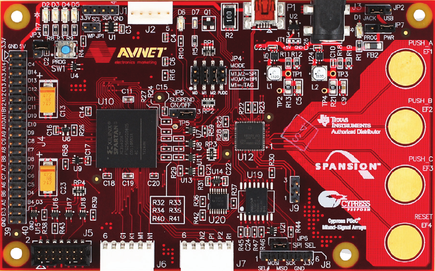
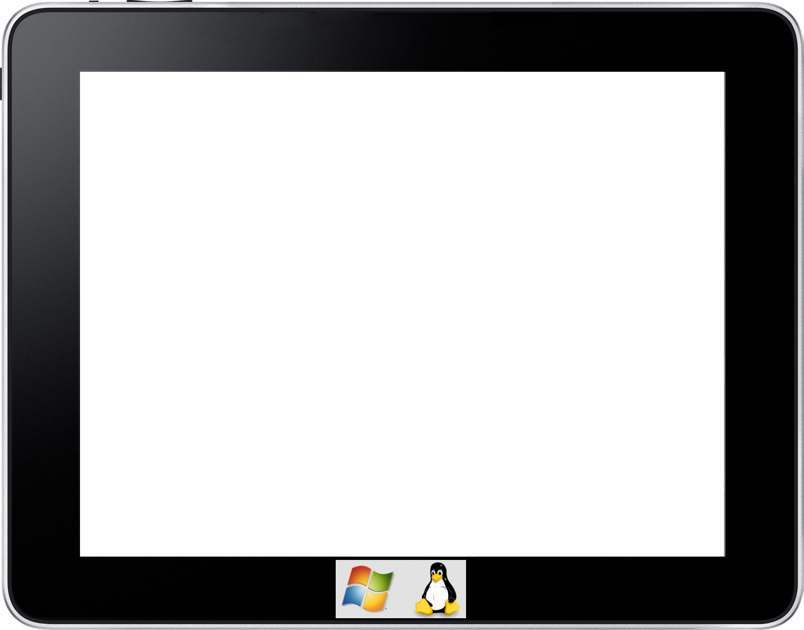

Proyecto Final de Carrera y
Master Thesis

Tutor/director: Moreno Aróstegui, Juan Manuel
Universidad: Universitat Politècnica de Catalunya
Cátedra/Departamento: Departament d'Enginyeria Electrònica
Año 2013
Tipo de documento: Master thesis (pre-Bologna period)

Kit Avnet
FPGA Xilinx Spartan-3A
Parallel Flash 32 MB
Conector JTAG
Sensor TI TMP100NA
LED's
Cypress PSoC
SPI Flash 128 MB
Botones capacitivos
eZ430-RF2500T
modo ED
MSP430F2274
CC2500
LED rojo
LED verde
Pins de extensión
Cristal 26MHz
Antena

- 1er byte: origen / destino
- 2do byte: lectura / escritura
- 3er y 4to byte: dirección memoria/puerto
- 5to, 6to y 7to byte: información
- 8vo byte: carry return (salto línea)
eZ430-RF2500T
modo AP
eZ430-RF USB
